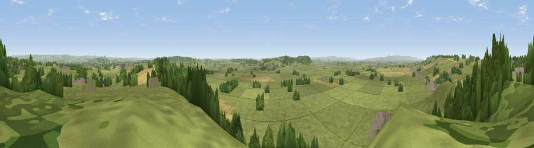

Viewpoint near Ashcott
#15637 in England · top 45% of its area beats it · near AshcottWhere it is
The exact computed spot (ST 43475 35925). Click the marker for map links.
The view, rendered

A 360° render of this exact spot computed from the terrain model, tree cover and land cover — summer colours, afternoon light, calibrated against photographs of famous viewpoints. Real trees, hedges and buildings will differ in detail.
The panorama
Grey silhouette: terrain skyline in each direction (720 bearings, Earth curvature and refraction included). Dashed green: skyline with trees (+15 m) and buildings (+8 m) as obstacles. Blue strip: how far the ground is visible on each bearing.
Where the view opens
Wedge length = distance to the farthest visible ground on that bearing (vegetation-aware). Rings at 10, 25 and 50 km.
What fills the view
76% grassland · 16% woodland · 5% cropland · 3% built-up
Angular shares of the visible panorama (visual magnitude), not map area. Landscape diversity 0.33 (0–1 Shannon).
Key numbers
More beautiful places nearby
The staircase of upgrades: each row has a higher view potential than everything closer. Driving times are estimates from straight-line distance, calibrated against real road routing — check an actual route before setting out.
| Place | Direction | Drive | Score |
|---|---|---|---|
| Viewpoint near Greinton | WNW · 3 km | ~7 min | 59.1 |
| Viewpoint near Moorlinch | WNW · 4 km | ~9 min | 63.8 |
| Viewpoint near Street | ESE · 4 km | ~10 min | 66.6 |
| Socombe Hill | WNW · 5 km | ~12 min | 76.4 |
| Brent Knoll | NNW · 18 km | ~31 min | 77.7 |
| Viewpoint near Axbridge | N · 20 km | ~33 min | 79.2 |
| Beacon Batch | NNE · 22 km | ~37 min | 79.4 |
| Bleadon Hill [Loxton Hill] | NNW · 22 km | ~37 min | 79.6 |
51.11981, -2.80899 · source: screening · position refined by local search. Computed location — check access rights before visiting.